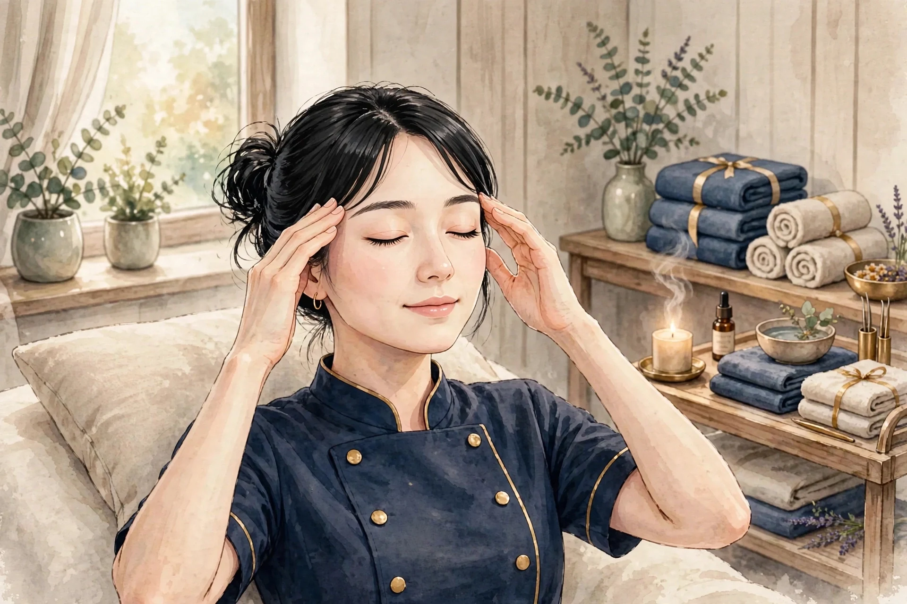

国分町で気になる頭痛・頭の重さ ── やませと冬の冷えの街で感じる頭の重さと、セルフケア

「寒い日は決まって頭が重い」「こめかみがずっしりする」「首や肩の張りと一緒に頭もすっきりしない」。頭の重さは、冷えと関わりの深いお悩みでもあります。仙台・国分町／一番町は、東北の中心都市として官公庁やオフィスが集まり、デスクワークの方の多い地域です。夏でも冷たい北東の風「やませ」が吹いて肌寒くなる日があり、冬は乾いた冷たい風が首まわりを冷やします。頭の重さは、首や肩のこわばり、冷え、天気や気圧の変化、睡眠の質など、いくつもの要因が重なって感じられることがあります。このページでは、頭の重さを感じやすくなる要因を整理し、ご自宅でできるセルフケアと、医療機関への受診を考える目安をまとめました。仙台は、東北各地への出張や転勤の拠点でもあり、移動とデスクワークの両方の負担が重なる方もいます。「出張の移動が続いた週に頭が重い」「やませの日は決まって重い」という方は、天気と移動のリズムの中で要因を探すことが、対策の第一歩になります。なお、頭の重さは「痛み」というほどでなくても、仕事の集中力の低下や、夕方のぼんやり感として日常に影響します。我慢するのが当たり前になっている方ほど、要因を言葉にして整理することが、軽くするための近道になります。
頭の重さは、どこから生まれるのか
頭の重さを感じるとき、関わっていることが多いのが首や肩の筋肉です。頭は体重のおよそ1割ほどの重さがあり、前に傾くほど首や肩にかかる負担は大きくなります。冷たい風で首まわりが冷えると筋肉はこわばりやすく、同じ姿勢が続くことで巡りが滞り、締めつけられるような重さとして感じられることがあります。また、気圧が下がる日や寒暖差の大きい日は、体の調節を担う自律神経に負担がかかり、頭の重さを訴える方が増える傾向があります。睡眠不足や目の酷使も重なりやすい要因です。また、杜の都と呼ばれる仙台は街路樹が多く、季節の移ろいを感じやすい街ですが、花粉の時期には鼻や目の負担が頭の重さに重なる方もいます。季節ごとに重さの背景が変わることもあるため、「いつ重いか」を意識することが、自分のパターンを知る手がかりになります。
頭の重さを感じやすくなる要因
1. やませと冷たい風
夏でも気温が上がらないやませの日は、季節に合わない冷えが首まわりを襲います。油断して薄着で出かけた日ほど、夕方の頭の重さにつながることがあります。
2. 首・肩のこわばりと姿勢
県庁や市役所に近い一番町周辺は事務仕事の多い地域です。画面をのぞき込む姿勢が続くと首や肩の筋肉が張り続け、夕方にかけて頭の重さが増していきます。
3. 冬の乾燥と暖房の寒暖差
冬の仙台は乾いた冷たい風と、暖房の効いた室内の乾燥が重なります。室内外の行き来は体温調節の負担が大きく、頭の重さの背景になりやすいものです。
4. 天気・気圧の変化
雨の前や低気圧の接近時など、気圧が下がるタイミングで頭の重さを感じる方は多くいます。天気に体調が左右されやすい方は、予定の詰め方を調整する目安にもなります。
5. 睡眠不足と緊張の抜けにくさ
眠りの浅い日が続くと疲労の回復が追いつかなくなります。緊張が抜けないまま眠る習慣は、朝から頭が重い感覚の背景になりやすいものです。
当サロンでのアプローチ
当サロンでは、頭そのものを強く押すような施術は行いません。まずはカウンセリングで、重さを感じやすい季節やタイミング、仕事の姿勢、睡眠の様子をうかがい、首・肩・背中・頭皮まわりを中心に、オイルマッサージと美容整体で丁寧にほぐしていきます。こめかみまわりは力加減を確認しながらやさしく触れ、首の付け根や肩井まわりの張りをゆるめることで、頭まわりの重さがすっと抜けるような感覚を目指します。強い痛みや頻度の高い頭痛がある場合は、施術の前に医療機関への相談をおすすめしています。施術の途中でも力加減をお声がけしながら進めます。国分町・一番町で、静かに体を休める時間を大切にしています。
ご自宅でできるセルフケア
首と肩を温める
蒸しタオルや温かいシャワーを首の後ろから肩にかけて当てると、冷えでこわばった筋肉がゆるみやすくなります。冷たい風に当たった日の夜に行うのがおすすめです。
こめかみと頭皮をやさしくほぐす
指の腹をこめかみに当て、小さな円を描くようにゆっくり動かします。頭皮全体も指の腹で少しずつずらすようにほぐすと、頭まわりの緊張が抜けやすくなります。強く押さないことが大切です。
夏でも首まわりを冷やさない支度を
やませの予報が出る日は、夏でも薄手のストールを一枚持ち歩くと安心です。冷房の強い室内でも、同じ一枚が首まわりの冷えを防ぎます。
画面から離れる休憩をはさむ
1時間に一度は画面から目を離し、遠くを見て立ち上がる時間を作ります。首をゆっくり左右に倒す、肩を大きく回すなど、小さな動きを挟むだけでも蓄積の仕方が変わります。
湯船につかって巡りを整える
シャワーだけで済ませず、ぬるめのお湯にゆっくりつかることで全身の巡りが整い、首や肩のこわばりもゆるみやすくなります。就寝の1時間ほど前が目安です。
側頭筋をほぐすマッサージ
耳の上あたりに手のひらを当て、頭皮ごとゆっくり円を描くように動かします。側頭部は噛みしめの癖とも関わる場所で、寒さで奥歯を噛みしめがちな方は、力を抜く意識と一緒にほぐしてみてください。
仙台で暮らす方の、頭の重さとの付き合い方
定禅寺通や一番町のアーケードは、天気の悪い日でも濡れずに歩ける場所です。冷たい風の日は無理に外を歩かず、アーケード内を歩く小さな運動に置き換えるのも一つの方法です。朝の天気予報で「やませ」の言葉を聞いた日は、服装に一枚足す備えを。天気予報と体調を照らし合わせる習慣は、頭の重さと上手に付き合う助けになります。頭の重さが続く日は、がんばり過ぎのサインとして受け止め、休む予定を先に入れることも大切にしてください。やませの予報が出る日は、夏でも一枚多く羽織る支度と、首まわりを覆う工夫を。冷房と外気の両方から首を守ることが、夕方の重さを分ける小さな差になります。出張の続く週は、移動の合間に首を動かす時間を取り、帰宅後は湯船で温める流れを大切にしてください。頭の重さを感じた日は、その日の天気・気温・睡眠を簡単にメモしておくと、自分の重くなりやすいパターンが見えてきます。パターンが分かれば、予定の組み方や休憩の取り方を先回りして調整できるようになります。仙台では、春先の気温差の大きい時期も頭の重さが出やすい頃です。朝の気温だけで服装を決めず、夕方の冷え込みに備えた一枚を用意しておくことが助けになります。定禅寺通のケヤキ並木の下を歩く短い散歩は、気分転換と軽い運動を兼ね、首や肩の巡りを変える機会にもなります。
受診の目安
ステラアルデバランは、仙台・国分町／一番町エリアで開院準備中です。開院の際は、首・肩・頭まわりを丁寧にほぐす女性専用のオイルマッサージと美容整体を、90分10,000円の単一料金でご案内する予定です。初回割引はありませんが、その分、毎回の施術内容を充実させる方針です。営業時間は月〜土17:00〜22:00（日曜休み）の予定で、仕事帰りに立ち寄りやすい時間帯を考えています。開院日と受付開始のお知らせはLINE公式アカウントでお届けしますので、気になる方は友だち追加のうえお待ちください。